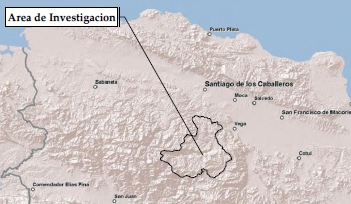

Case Study: Madre de Las Aguas Conservation Area
At a glance
Primary Partner: University of Vermont
Primary Researchers:
Lee Gross and Nathaly Agosto Filion
Model: Sediment regulation
Maps: Source, sink, use, and flow maps for above ecosystem services
Practical application
In recent years, hydroelectric generation provided only 18% of the Dominican Republic’s total demand for electricity. Nearly all the remaining demand was filled with expensive imported petroleum, diesel oil and coal, leading to negative environmental impacts. Although the Dominican Republic could produce more hydroelectric power, sedimentation currently limits hydroelectric generation. Poor agricultural practices typically lead to soil erosion, causing runoff of sediment into the rivers and reservoirs. Because of this sedimentation, the Jimenoa hydroelectric power station must be cleaned every month, which reduces its efficiency and profitability. More sustainable land use patterns could facilitate growth in hydroelectric generation while reducing energy costs for the country.
ARIES provided a tool to
demonstrate to decision makers how shade coffee farms and
other land management schemes reduce erosion for beneficiaries across
the landscape. This tool equips local farmers'
organizations, companies purchasing agricultural
products from the region, conservation organizations and
government agencies with the necessary information to make
coordinated decisions that improve overall landscape
functionality with minimum levels of investment.
The Pico Duarte Coffee Region and surrounding Madre de Las Aguas (Mother of Waters) Conservation Area are areas of critical ecological, economic and social importance to the people of the Dominican Republic. In recent years much attention has been paid to the establishment of protected areas for the conservation of biodiversity and ecosystem services. Despite these efforts, protected areas represent less than five percent of this working agricultural landscape traditionally in shade coffee. These shade coffee poly-cultures play an essential role in ensuring ecosystem function to conserve water resources, provide habitat for birds, and provide consumptive resources to households . Farmers recognize the role of their shade coffee in maintaining these types of services, but have struggled to maintain their farms. As across the tropics most Dominican coffee farmers are smallholders, managing only 1-3 hectares of land. Farmers generally depend on family members for labor, face a lack of access to land tenure, and live in a constant state of poverty. Falling coffee prices, trade liberalization and rising input costs have made life difficult for these small farmers. Since 2002 these increased economic pressures have led to significant changes in the landscape. More than half of small coffee farms have agglomerated into larger farms of monoculture crops such as chayote squash and beans and pasture for cattle. Changes in the landscape have resulted in environmental degradation threatening the stability of this ecosystem to maintain function and provide services at local, national and international levels.
StepsWe adapted previously developed ARIES sediment regulation models for use in the Dominican Republic by adding or removing locally important influences on ecosystem service delivery for the region and through incorporation of local spatial data, where available. Model updates were based on literature reviews and in-country field work by the researchers involved. ARIES currently contains an ad hoc erosion model that can be used in places where deterministic equations like the Revised Universal Soil Loss Equation (RUSLE) are inappropriate. By combining different models in contextually appropriate ways, ARIES is able to more realistically account for ecosystem service provision, use, and flows. We map farmland and reservoirs as beneficiaries of sediment-free water. By modeling the spatial connections between beneficiaries and upstream ecosystems, we can better understand where landscape interventions are likely to lead to reduced erosion or increased sediment deposition before sediment reaches the region’s reservoirs. Copyright (C) 2011 The ARIES Consortium. All rights reserved. |